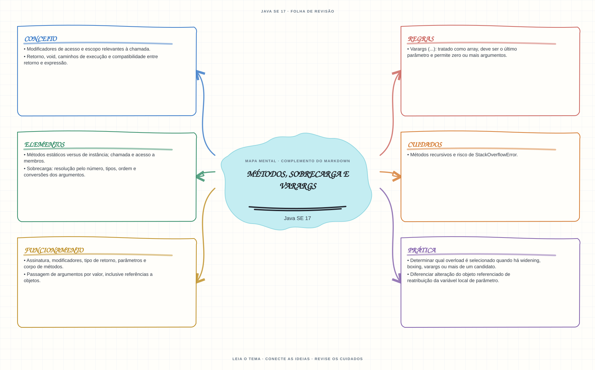

Ver mapa mental deste assuntoPrever a resolução de overloads a partir dos tipos declarados e distinguir passagem por valor de mutação do objeto.
Primeiro contato: aprenda o conceito e pratique antes de consultar os detalhes de prova. Voltar aos fundamentos se algum termo ainda for novo.
- Leia o objetivo e localize a ideia principal no conteúdo abaixo.
- Preveja o resultado, compile e execute o exemplo.
- Faça a atividade sem copiar a solução e confira a checagem comentada.
EXEMPLO DE CONSOLE
Veja a regra em execução
Antes de executar, anote sua previsão. Compile o exemplo com o JDK e compare a saída observada com as regras deste assunto.
Comandos para compilar e executar
javac -d target/bin src/02-controle-de-fluxo/metodos-sobrecarga-e-varargs/MetodosSobrecargaEVarargsExample.java
java -cp target/bin MetodosSobrecargaEVarargsExampleA execução imprime o resultado no console para você comparar com sua previsão.
Consultar código-fonte: MetodosSobrecargaEVarargsExample.java
public class MetodosSobrecargaEVarargsExample {
private static String descrever(int valor) {
return "inteiro " + valor;
}
private static String descrever(String valor) {
return "texto " + valor;
}
private static int somar(int... valores) {
int soma = 0;
for (int valor : valores) {
soma += valor;
}
return soma;
}
public static void main(String[] args) {
System.out.println("=== Sobrecarga de metodos e varargs ===");
System.out.println("O compilador escolhe a sobrecarga pelo tipo do argumento:");
System.out.println("descrever(17) -> " + descrever(17));
System.out.println("descrever(\"Java\") -> " + descrever("Java"));
System.out.println("Resultado de somar(1, 2, 3, 4): " + somar(1, 2, 3, 4));
System.out.println("Varargs tambem aceita zero argumentos: somar() -> " + somar());
System.out.println("Um array pode ser passado ao parametro varargs: "
+ somar(new int[] {5, 6}));
}
}
PRATIQUE AGORA
Faça uma pequena alteração por conta própria
Crie um método que receba dois números e devolva a soma; faça uma sobrecarga que receba três e compare as chamadas.
Concluído quando: o programa compilar, produzir o resultado esperado e você conseguir explicar a regra aplicada.
CHECAGEM RÁPIDA · Métodos, sobrecarga e varargs
A escolha do overload usa o tipo real do objeto passado ou o tipo declarado da expressão?
Conferir resposta comentada
Usa os tipos conhecidos em compilação; referências são passadas por valor, então reatribuir o parâmetro não reatribui a variável do chamador.
Estude
- Assinatura, modificadores, tipo de retorno, parâmetros e corpo de métodos.
- Métodos estáticos versus de instância; chamada e acesso a membros.
- Passagem de argumentos por valor, inclusive referências a objetos.
- Sobrecarga: resolução pelo número, tipos, ordem e conversões dos argumentos.
- Varargs (
...): tratado como array, deve ser o último parâmetro e permite zero ou mais argumentos. - Retorno,
void, caminhos de execução e compatibilidade entre retorno e expressão. - Métodos recursivos e risco de
StackOverflowError. - Modificadores de acesso e escopo relevantes à chamada.
Verifique se consegue
- Determinar qual overload é selecionado quando há widening, boxing, varargs ou mais de um candidato.
- Diferenciar alteração do objeto referenciado de reatribuição da variável local de parâmetro.
Como este capítulo se relaciona com cada exame
Fundamentos reaproveitáveis; `switch` moderno não é sintaxe Java 8.
Base de estudo deste portal; confirme o mapeamento com o blueprint vigente.
Conceitos úteis; revise pattern matching para `switch` em Java 21.
Orientação editorial sobre reaproveitamento do material; não representa objetivos oficiais nem garante cobertura do exame. Consulte o comparativo e as fontes da Oracle.